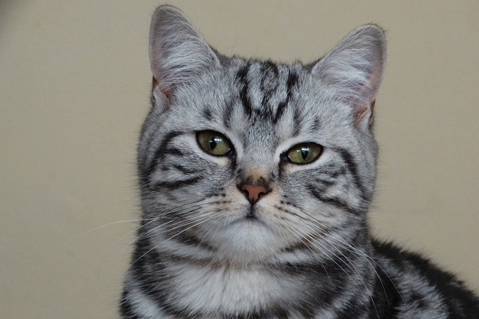
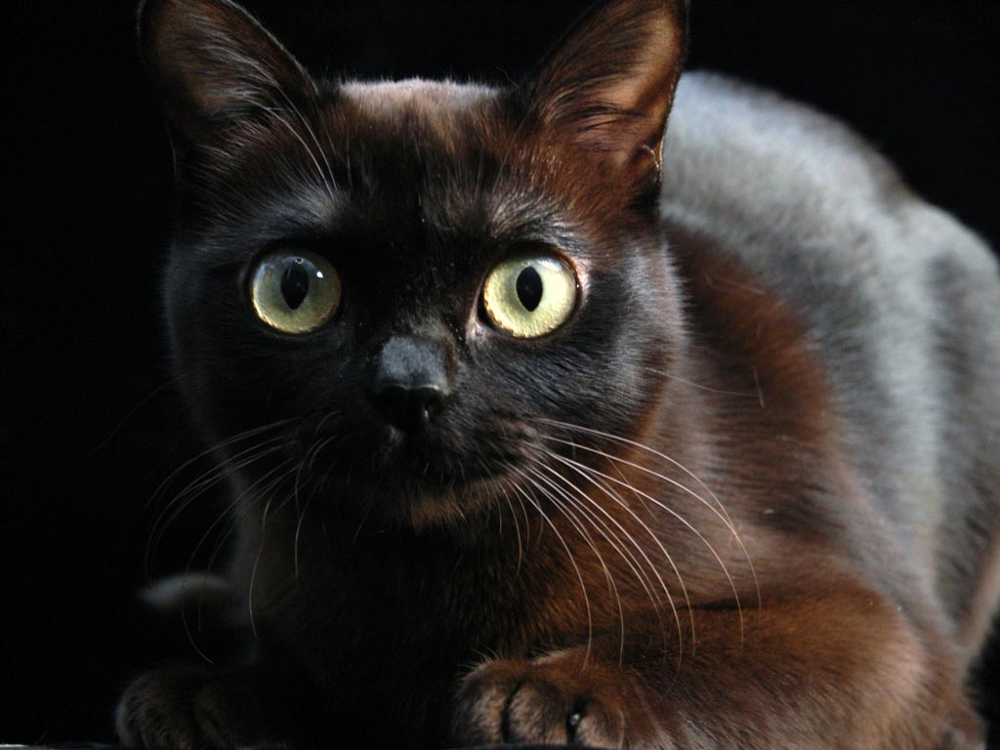

More Information about the Cats
Here is some more information about these cats, and there breeds.
American Shorthair

The American Shorthair is believed to descended from European cats that were brought to North America from early settlers. It was one of the most popular breeds in 2012, but over time people stopped really looking at these rat catching cats.
The Coat
- Legnth: Short
- Characteristics: Straight
- Colors: White, Blue, Black, Cream, Red, Silver, Golden, Brown, Cameo,
Bluecream, Tortoiseshell, Chinchilla
- Pattern: Solid color, Tortoiseshell, Bicolor, Tricolor/Calico, Tabby, Smoke, Shaded
- Less Allergenic: No
- Overall Grooming Needs: Moderate
Back to Andrew
Burmese Cat

The Burmese cat originated from Thailand, belived its roots came from present-day Thai-Burma. The cat breed devolped in the US and Britain.
Back to Jack
Exotic Shorthair

The Exotic Shorthair is a breed of cat that was breed to be a short-haired version of the Persian breed.
Back to Nibs